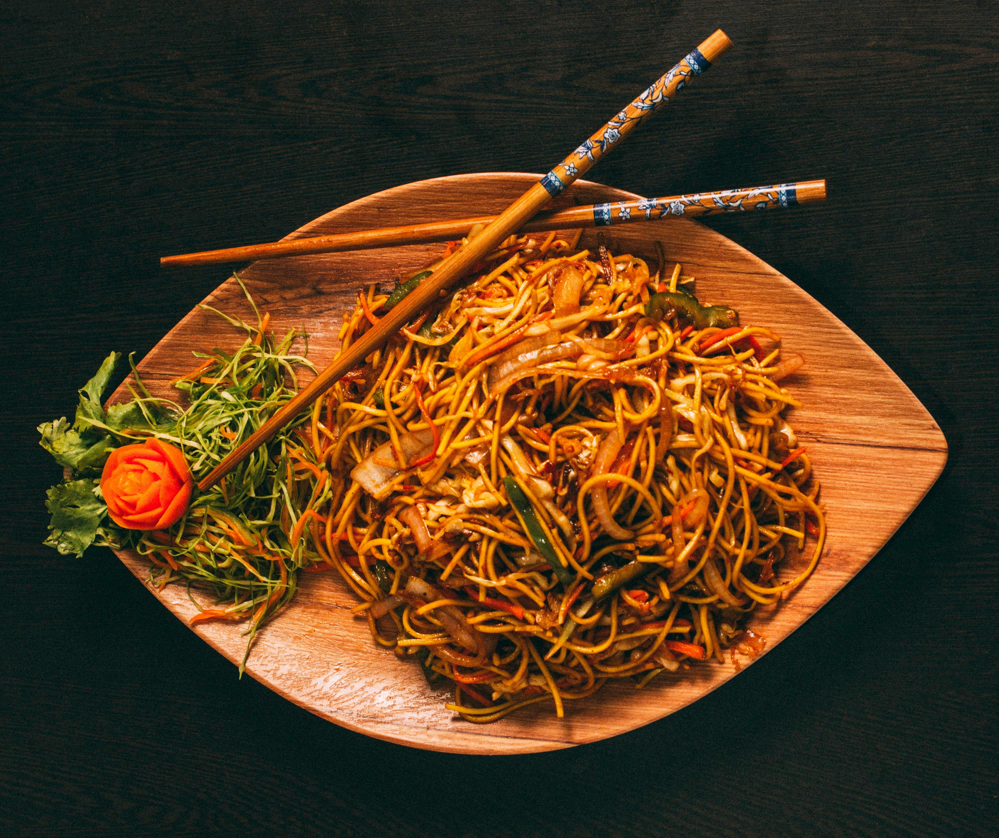

Hakka Noodles aka Desi Chow Mein

Home
The pinnacle of Indo-Chinese cuisine. One of the most beloved indian
street foods. Spicy Saucy Delicious noodles.
Ingredients
- 1 packet noodles
- 1 carrot, finely sliced
- 1 onion, finely sliced
- 1/2 cabbage, finely chopped
- 1 capsicum, finely sliced
- 4-5 french beans, finely chopped
- 1 masala mix with MSG
Method
- Firstly boil 4 cups of water.
- Add 1 tsp salt and oil to it.
-
Once it begins to boil, lower the flame and dip inside the noodles and
cook them al dente. This will take only 5-7 minutes.
-
Transfer them on a sieve to drain off the excess water and wash with
cold water.
- In a wok, add some oil and heat it.
- Saute onion.
- Now add the rest of the vegetables and saute for about a minute.
- Add the masala mix with MSG.
- Mix them well.
- Garnish with some chopped green onions and serve hot.
And Viola!, your hot and spicy desi style chinese noodles are
ready.